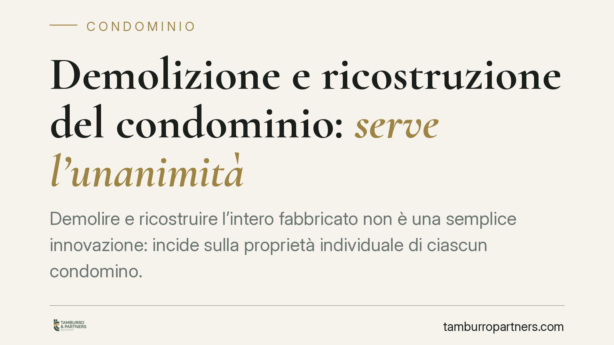

Demolizione e ricostruzione del condominio: serve l'unanimità
Demolire e ricostruire l'intero fabbricato non è una semplice innovazione: incide sulla proprietà individuale di ciascun condomino. Per questo non basta la maggioranza assembleare, ma occorre il consenso unanime. Una recente pronuncia di merito ribadisce il principio e dichiara nulla la delibera adottata a maggioranza. Vediamo cosa cambia per amministratori e proprietari.

Il caso
Un'assemblea condominiale approva a maggioranza la demolizione dell'edificio e la sua ricostruzione. Un condomino contesta la decisione. Secondo una pronuncia di merito recente (Tribunale de L'Aquila, sentenza indicata come n. 681/2026, non ancora massimata e i cui estremi vanno verificati presso la cancelleria), la delibera è nulla per difetto assoluto di attribuzioni: l'assemblea ha deciso su una materia che non rientra nei suoi poteri.
Segnaliamo con trasparenza che gli estremi della sentenza — in particolare la datazione — presentano elementi da riscontrare. Il principio giuridico che essa applica, tuttavia, è consolidato e prescinde dalla singola pronuncia.
Inquadramento normativo
Occorre distinguere due piani.
Da un lato la gestione e l'uso dei beni comuni, dove l'assemblea decide a maggioranza, con quorum aggravati per le innovazioni (art. 1120 e 1136 c.c.). Dall'altro la disposizione della proprietà individuale: qui l'assemblea non ha alcun potere. Demolire l'edificio significa incidere sul diritto di proprietà esclusiva di ciascuno sul proprio appartamento. Nessuna maggioranza, per quanto ampia, può privare un condomino del suo bene senza il suo consenso.
Da qui la categoria della nullità per difetto assoluto di attribuzioni, delineata dalle Sezioni Unite (Cass. SU n. 9839/2021): quando l'assemblea decide su materie sottratte alla sua competenza, la delibera è nulla, non semplicemente annullabile. La distinzione è pratica: la delibera annullabile va impugnata entro trenta giorni ex art. 1137 c.c., mentre quella nulla può essere fatta valere in ogni tempo e da chiunque vi abbia interesse.
L'eccezione riguarda il perimento dell'edificio disciplinato dall'art. 1128 c.c. In caso di perimento totale, o parziale che riguardi almeno i tre quarti del valore dell'edificio, ciascun condomino può chiedere la vendita all'asta del suolo e dei materiali, salvo diverso accordo; se il perimento è di parte minore, l'assemblea delibera la ricostruzione con le maggioranze previste dalla legge. In questi casi la ricostruzione non è una libera scelta di trasformazione, ma la reazione a un evento che ha distrutto o gravemente compromesso il bene.
È questo il quadro entro cui va letto anche il tema della ricostruzione dopo eventi sismici. Le specifiche facoltà di deliberare a maggioranza discendono, in questi scenari, dall'art. 1128 c.c. e dalla normativa emergenziale di volta in volta applicabile (ordinanze commissariali, leggi speciali post-calamità): fonti che vanno individuate in concreto caso per caso, e che non autorizzano una demolizione volontaria dell'edificio integro.
Implicazioni pratiche
Per l'amministratore, la lezione è netta: portare in assemblea una demolizione con ricostruzione dell'intero fabbricato come se fosse un'innovazione espone la delibera a nullità. E la nullità non si sana con il decorso del tempo.
Per il condomino dissenziente, la nullità offre una tutela più ampia dell'annullabilità: non è vincolato al termine di trenta giorni.
Attenzione poi agli appalti a valle. Se il condominio stipula contratti con imprese sulla base di una delibera nulla, l'intera operazione poggia su fondamenta instabili: pagamenti già effettuati, penali, contenziosi con l'appaltatore. Il rischio economico ricade sul condominio e, in parte, sull'amministratore che ha dato esecuzione.
Cosa fare in concreto
- Verificate la natura dell'intervento prima di convocare l'assemblea: distinguete tra manutenzione, innovazione e trasformazione che incide sulla proprietà individuale.
- Raccogliete il consenso unanime di tutti i proprietari quando il progetto comporta demolizione e ricostruzione dell'edificio integro.
- Documentate lo stato dell'edificio con perizia tecnica se invocate il perimento ex art. 1128 c.c.: la percentuale di danno determina la disciplina applicabile.
- Non stipulate appalti né versate acconti prima di aver accertato la validità della delibera.
- È opportuno un vaglio tecnico-legale preventivo di ogni progetto di trasformazione radicale del fabbricato, così da individuare quorum e presupposti corretti.
Disclaimer
Contributo informativo a cura di Tamburro & Partners - Avv. Giuseppe Tamburro. Non costituisce parere legale.
Ogni condominio ha una storia a sé.
Se gestisci un'amministrazione e vuoi un confronto su una specifica questione condominiale, scrivi allo studio. Ti rispondiamo entro un giorno lavorativo.